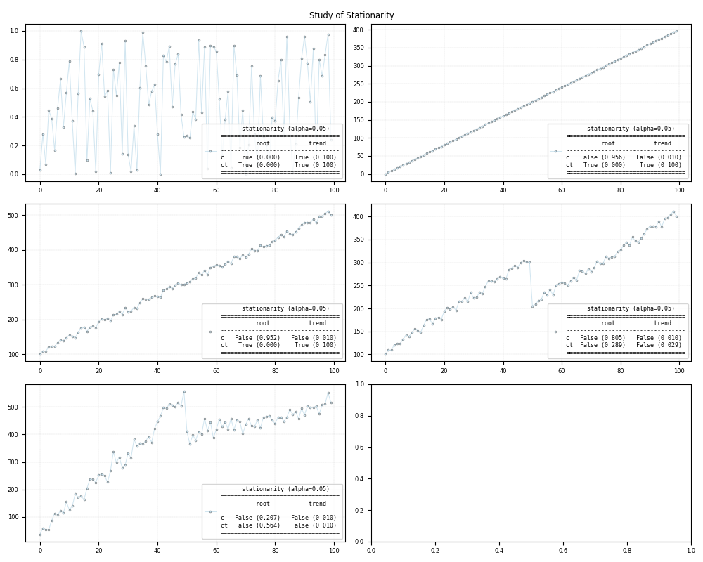

Note
Click here to download the full example code
Statistical test - Stationarity¶
Example using your package
Out:
c:\users\kelda\desktop\repositories\virtualenvs\venvpy39-datablend\lib\site-packages\statsmodels\tsa\stattools.py:1875: FutureWarning: The behavior of using nlags=None will change in release 0.13.Currently nlags=None is the same as nlags="legacy", and so a sample-size lag length is used. After the next release, the default will change to be the same as nlags="auto" which uses an automatic lag length selection method. To silence this warning, either use "auto" or "legacy"
warnings.warn(msg, FutureWarning)
c:\users\kelda\desktop\repositories\virtualenvs\venvpy39-datablend\lib\site-packages\statsmodels\tsa\stattools.py:1910: InterpolationWarning: The test statistic is outside of the range of p-values available in the
look-up table. The actual p-value is greater than the p-value returned.
warnings.warn(
c:\users\kelda\desktop\repositories\virtualenvs\venvpy39-datablend\lib\site-packages\statsmodels\tsa\stattools.py:1910: InterpolationWarning: The test statistic is outside of the range of p-values available in the
look-up table. The actual p-value is greater than the p-value returned.
warnings.warn(
c:\users\kelda\desktop\repositories\virtualenvs\venvpy39-datablend\lib\site-packages\statsmodels\regression\linear_model.py:903: RuntimeWarning: divide by zero encountered in log
llf = -nobs2*np.log(2*np.pi) - nobs2*np.log(ssr / nobs) - nobs2
c:\users\kelda\desktop\repositories\virtualenvs\venvpy39-datablend\lib\site-packages\statsmodels\regression\linear_model.py:903: RuntimeWarning: divide by zero encountered in log
llf = -nobs2*np.log(2*np.pi) - nobs2*np.log(ssr / nobs) - nobs2
c:\users\kelda\desktop\repositories\virtualenvs\venvpy39-datablend\lib\site-packages\statsmodels\tsa\stattools.py:1875: FutureWarning: The behavior of using nlags=None will change in release 0.13.Currently nlags=None is the same as nlags="legacy", and so a sample-size lag length is used. After the next release, the default will change to be the same as nlags="auto" which uses an automatic lag length selection method. To silence this warning, either use "auto" or "legacy"
warnings.warn(msg, FutureWarning)
c:\users\kelda\desktop\repositories\virtualenvs\venvpy39-datablend\lib\site-packages\statsmodels\tsa\stattools.py:1906: InterpolationWarning: The test statistic is outside of the range of p-values available in the
look-up table. The actual p-value is smaller than the p-value returned.
warnings.warn(
c:\users\kelda\desktop\repositories\virtualenvs\venvpy39-datablend\lib\site-packages\statsmodels\tsa\stattools.py:1898: RuntimeWarning: invalid value encountered in double_scalars
kpss_stat = eta / s_hat
c:\users\kelda\desktop\repositories\virtualenvs\venvpy39-datablend\lib\site-packages\statsmodels\tsa\stattools.py:1875: FutureWarning: The behavior of using nlags=None will change in release 0.13.Currently nlags=None is the same as nlags="legacy", and so a sample-size lag length is used. After the next release, the default will change to be the same as nlags="auto" which uses an automatic lag length selection method. To silence this warning, either use "auto" or "legacy"
warnings.warn(msg, FutureWarning)
c:\users\kelda\desktop\repositories\virtualenvs\venvpy39-datablend\lib\site-packages\statsmodels\tsa\stattools.py:1910: InterpolationWarning: The test statistic is outside of the range of p-values available in the
look-up table. The actual p-value is greater than the p-value returned.
warnings.warn(
c:\users\kelda\desktop\repositories\virtualenvs\venvpy39-datablend\lib\site-packages\statsmodels\tsa\stattools.py:1906: InterpolationWarning: The test statistic is outside of the range of p-values available in the
look-up table. The actual p-value is smaller than the p-value returned.
warnings.warn(
c:\users\kelda\desktop\repositories\virtualenvs\venvpy39-datablend\lib\site-packages\statsmodels\tsa\stattools.py:1875: FutureWarning: The behavior of using nlags=None will change in release 0.13.Currently nlags=None is the same as nlags="legacy", and so a sample-size lag length is used. After the next release, the default will change to be the same as nlags="auto" which uses an automatic lag length selection method. To silence this warning, either use "auto" or "legacy"
warnings.warn(msg, FutureWarning)
c:\users\kelda\desktop\repositories\virtualenvs\venvpy39-datablend\lib\site-packages\statsmodels\tsa\stattools.py:1910: InterpolationWarning: The test statistic is outside of the range of p-values available in the
look-up table. The actual p-value is greater than the p-value returned.
warnings.warn(
c:\users\kelda\desktop\repositories\virtualenvs\venvpy39-datablend\lib\site-packages\statsmodels\tsa\stattools.py:1906: InterpolationWarning: The test statistic is outside of the range of p-values available in the
look-up table. The actual p-value is smaller than the p-value returned.
warnings.warn(
c:\users\kelda\desktop\repositories\virtualenvs\venvpy39-datablend\lib\site-packages\statsmodels\tsa\stattools.py:1875: FutureWarning: The behavior of using nlags=None will change in release 0.13.Currently nlags=None is the same as nlags="legacy", and so a sample-size lag length is used. After the next release, the default will change to be the same as nlags="auto" which uses an automatic lag length selection method. To silence this warning, either use "auto" or "legacy"
warnings.warn(msg, FutureWarning)
c:\users\kelda\desktop\repositories\virtualenvs\venvpy39-datablend\lib\site-packages\statsmodels\tsa\stattools.py:1910: InterpolationWarning: The test statistic is outside of the range of p-values available in the
look-up table. The actual p-value is greater than the p-value returned.
warnings.warn(
c:\users\kelda\desktop\repositories\virtualenvs\venvpy39-datablend\lib\site-packages\statsmodels\tsa\stattools.py:1906: InterpolationWarning: The test statistic is outside of the range of p-values available in the
look-up table. The actual p-value is smaller than the p-value returned.
warnings.warn(
stationarity-adf_ct_statistic -8.3693
stationarity-adf_ct_pvalue 0.0
stationarity-adf_ct_nlags 0
stationarity-adf_ct_nobs 99
stationarity-adf_ct_criticalvalue_1% -4.0533
stationarity-adf_ct_criticalvalue_5% -3.4558
stationarity-adf_ct_criticalvalue_10% -3.1536
stationarity-adf_c_statistic 0.0518
stationarity-adf_c_pvalue 0.9626
stationarity-adf_c_nlags 9
stationarity-adf_c_nobs 90
stationarity-adf_c_criticalvalue_1% -3.5052
stationarity-adf_c_criticalvalue_5% -2.8942
stationarity-adf_c_criticalvalue_10% -2.5842
stationarity-kpss_ct_statistic 0.1163
stationarity-kpss_ct_pvalue 0.1
stationarity-kpss_ct_nlags 12
stationarity-kpss_ct_criticalvalue_10% 0.119
stationarity-kpss_ct_criticalvalue_5% 0.146
stationarity-kpss_ct_criticalvalue_2.5% 0.176
stationarity-kpss_ct_criticalvalue_1% 0.216
stationarity-kpss_c_statistic 0.8838
stationarity-kpss_c_pvalue 0.01
stationarity-kpss_c_nlags 12
stationarity-kpss_c_criticalvalue_10% 0.347
stationarity-kpss_c_criticalvalue_5% 0.463
stationarity-kpss_c_criticalvalue_2.5% 0.574
stationarity-kpss_c_criticalvalue_1% 0.739
stationarity-root_ct_stationary False
stationarity-root_c_stationary True
stationarity-trend_ct_stationary True
stationarity-trend_c_stationary False
stationarity-adf_maxlag 12
stationarity-adf_autolag BIC
stationarity-model {'x': [110...
stationarity-id Stationarity
dtype: object
stationarity (alpha=0.05)
==================================
root trend
----------------------------------
c True (0.963) False (0.010)
ct False (0.000) True (0.100)
==================================
Stationarity
No handles with labels found to put in legend.
9 10 11 12 13 14 15 16 17 18 19 20 21 22 23 24 25 26 27 28 29 30 31 32 33 34 35 36 37 38 39 40 41 42 43 44 45 46 47 48 49 50 51 52 53 54 55 56 57 58 59 60 61 62 63 64 65 66 67 68 69 70 71 72 73 74 75 76 77 78 79 80 81 82 83 84 85 86 87 88 89 90 91 92 93 94 95 96 97 98 99 100 101 102 103 104 105 106 107 108 109 110 111 112 113 114 115 116 117 118 119 120 121 122 123 124 125 126 127 128 129 130 131 132 133 134 135 136 137 138 139 140 141 142 143 144 145 | # Libraries
import numpy as np
import pandas as pd
import matplotlib as mpl
import matplotlib.pyplot as plt
# Import pyAMR
from pyamr.core.stats.stationarity import StationarityWrapper
# ----------------------------
# set basic configuration
# ----------------------------
# Set pandas configuration.
pd.set_option('display.max_colwidth', 14)
pd.set_option('display.width', 150)
pd.set_option('display.precision', 4)
# Set default parameters.
mpl.rc('lines', linewidth=0.35)
mpl.rc('xtick', labelsize=6)
mpl.rc('ytick', labelsize=6)
mpl.rc('legend', fontsize=6)
mpl.rc('grid')
mpl.rc('figure')
mpl.rc('axes')
mpl.rc('font', size=7)
# Font type.
font = {
'family': 'monospace',
'weight': 'normal',
'size': 6,
}
# ----------------------------
# create data
# ----------------------------
# Constants
length = 100
offset = 100
slope = 4
# Create variables.
x = np.arange(length)
n = np.random.rand(length)
# Create timeseries.
y_n = n
y_c = np.ones(length)*offset
y_t = x*slope+n
y_ct = x*slope+offset+n*20
y_r = np.concatenate((y_ct[:50], y_ct[50:]-offset))
# ----------------------------
# create stationarity objects
# ----------------------------
stationarity_n = StationarityWrapper().fit(x=y_n)
stationarity_c = StationarityWrapper().fit(x=y_c)
stationarity_t = StationarityWrapper().fit(x=y_t)
stationarity_r = StationarityWrapper().fit(x=y_r)
stationarity_ct = StationarityWrapper().fit(x=y_ct,
adf_kwargs={'maxlag':12, 'autolag':'BIC'})
# Print series.
print("\n")
print(stationarity_ct.as_series())
# Print summary.
print("\n")
print(stationarity_ct.as_summary())
# Print identifier.
print("\n")
print(stationarity_ct._identifier())
# ----------------
# plot
# ----------------
# Create figure
fig, axes = plt.subplots(3,2, figsize=(10,4))
axes = axes.flatten()
# Plot truth values.
axes[0].plot(y_n, color='#A6CEE3', alpha=0.5, marker='o',
markeredgecolor='k', markeredgewidth=0.5,
markersize=2, linewidth=0.75,
label=stationarity_n.as_summary())
axes[1].plot(y_c, color='#A6CEE3', alpha=0.5, marker='o',
markeredgecolor='k', markeredgewidth=0.5,
markersize=2, linewidth=0.75,
label=stationarity_c.as_summary())
# Plot truth values.
axes[2].plot(y_t, color='#A6CEE3', alpha=0.5, marker='o',
markeredgecolor='k', markeredgewidth=0.5,
markersize=2, linewidth=0.75,
label=stationarity_t.as_summary())
# Plot truth values.
axes[3].plot(y_ct, color='#A6CEE3', alpha=0.5, marker='o',
markeredgecolor='k', markeredgewidth=0.5,
markersize=2, linewidth=0.75,
label=stationarity_ct.as_summary())
# Plot truth values.
axes[4].plot(y_r, color='#A6CEE3', alpha=0.5, marker='o',
markeredgecolor='k', markeredgewidth=0.5,
markersize=2, linewidth=0.75,
label=stationarity_r.as_summary())
# Add grid
for ax in axes:
ax.grid(color='gray', linestyle='--', linewidth=0.2, alpha=0.5)
# Add legend
for ax in axes:
ax.legend(prop=font, loc=2)
# Study of Stationarity
plt.suptitle("Study of Stationarity")
# -----------------
# Save and load
# -----------------
# File location
#fname = '../examples/saved/stationarity-sample.pickle'
# Save
#stationarity_ct.save(fname=fname)
# Load
#stationarity_ct = StationarityWrapper().load(fname=fname)
# Show
plt.show()
|
Total running time of the script: ( 0 minutes 0.366 seconds)